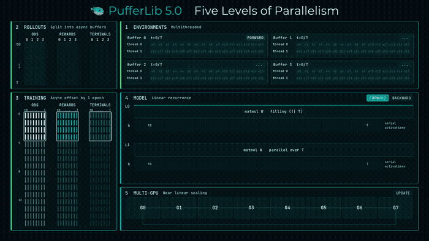
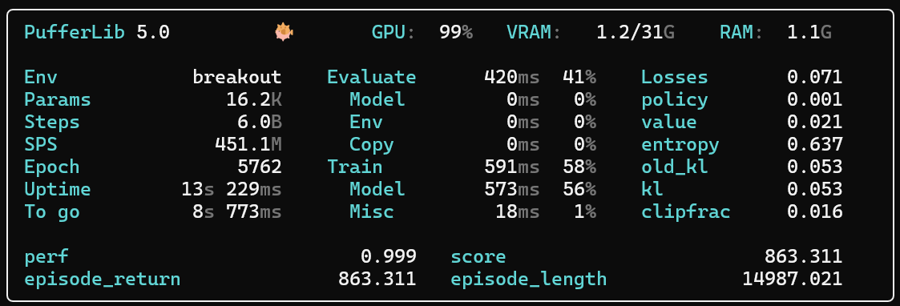

单张RTX 5090跑出每秒6000万步的强化学习训练。PufferLib 5.0把环境、采样、训练、模型、多卡五条轴全部并行化，逐条拆解每条轴的做法与卡点。
高性能RL训练在每张GPU上同时跑数百到数千个环境。这个数字不是为了让SPS跑分好看，而是1000多组实验的超参搜索结果，目标是在任务性能与实际训练耗时之间取得最大收益。

全部结果都能在官网的公开面板Constellation里查到，随PufferLib 5.0下载的本地副本里也可以复现。所以尽管跑上一百万个环境能把数字刷到远超1亿sps，这里报告的始终是实用配置下的最大吞吐。
并行环境仿真有两条主流路线。基于线程的CPU并行在基础设施一侧更难做，但写环境容易得多；GPU并行让基础设施变简单，但环境的编写和调试复杂得多。PufferLib两者都支持，不过多数跑分基于CPU。只要配套基础设施到位，朴素的CPU环境往往能跑赢朴素的GPU环境。
无论哪种后端，都会为观测、奖励和终止标记分配一大块连续内存，环境并行step填充这些缓冲区。CPU环境由OMP线程管理；GPU环境用一次大kernel启动，或一串固定的kernel启动，这一点对CUDA Graph很关键。
只有把环境基础设施和产生动作所需的网络前向传播放在一起考虑，复杂度才真正显现。GPU路线很直接：把所有环境放进一个大batch做推理，并把包括环境在内的整个rollout画进CUDA Graph。
CPU环境的高效推理难得多。绝对不能像Impala那样在CPU上跑模型，只有当极慢的环境和极小的模型同时成立时才勉强说得通。也不能像GPU路线那样把所有环境塞进一个大batch：GPU做前向时CPU闲着，CPU跑环境时GPU闲着，更糟的是CPU与GPU传输数据时两边一起闲置。
PufferLib把CPU环境拆成约2到8个大小相同的缓冲区，每个缓冲区在多个CPU线程上并行跑环境。前向传播用CUDA Graph，环境本身当然不在图里。每个缓冲区还持有独立的CUDA stream，相对其他缓冲区异步排队数据传输。一个缓冲区在做前向时，另一个在step环境，第三个正在把观测搬上GPU。这套做法快过Sample Factory的双缓冲和基于EnvPool的方案。
到此为止的异步优化都与同步训练完全兼容，意思是采集rollout用的策略，与后续训练epoch至少第一个minibatch用的策略是同一个。PufferLib 4.0里采样和训练串行交替；5.0引入一个选项，接受恰好1个epoch的策略滞后，换取两者重叠执行。
这套方案直接取自Costa的CleanBA。与Impala这类不受控的异步做法相比，它可复现，还能做到逐次运行完全确定。它还有个优点：真的能跑通。这整场折腾的来龙去脉写在我们的5.0算法长文里。
https://github.com/vwxyzjn/cleanba
在PufferLib的所有主要环境上，开启异步都刷新了SOTA。它确实会让为完全同步训练调好的超参出现一点退化，但实验发现重调之后总是更好。
训练时每个minibatch通常含4k到65k条观测，组织成长度32到512的序列。循环策略要在时间维上逐步循环，这正是当年转向transformer架构的动机之一。
但transformer有个缺点：评估和rollout采集都要携带完整状态历史，而且在小规模下极难做高效。PufferLib的PufferNet架构改用一种带记忆、但可沿时间并行化的线性递归。引入该架构之前，每个minibatch的信用分配视野通常只有16到64；提高到256到512之后，在更难的环境上看到了稳定收益。
https://x.com/jsuarez/status/2042273938592407674
这条轴看起来最直白，但要让小模型获得好的扩展性，设计必须精细。PufferLib把模型权重和梯度放进连续内存，跨进程平均梯度因此只是一次归约操作，没有中间聚合的额外开销。
即便是最小的模型，也能扩展到8卡并保持接近线性的加速。

参考：https://x.com/jsuarez/status/2099512342539391130